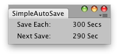

| path | 要在其中保存场景的文件路径。如果为空，则当前打开的场景将被覆盖；或者，如果之前从未保存过该场景，则会显示一个保存对话框。 |
| saveAsCopy | 如果设置为 /true/，系统将保存场景且不会更改 currentScene，也不会清除未保存的更改标记。 |
bool 如果保存成功，则返回 true，否则返回 false。
保存打开的场景。
所有路径均是相对于项目文件夹的路径，例如：“Assets/MyScenes/MyScene.unity”。
在调用函数之前，路径中指定的文件夹必须已存在。
如果未指定任何路径，则使用当前打开的场景的路径，除非此场景在这之前从未保存，在这种情况下，系统会显示一个保存对话框。
如果保存失败，该函数将返回 /false/。如果指定的路径无效或者用户在出现保存对话框后选择取消，则会发生这种情况。
调用该函数时，系统将清除未保存的更改标记，就像使用 File 菜单进行保存时一样。
（在 Windows 上，未保存的更改标记是窗口标题中文件名后的星号。
在 macOS 上，该标记是窗口的红色关闭按钮内的一个点。）
指定路径后，currentScene 也将更改为指定资源。
然而，当 saveAsCopy 设置为 true 时，currentScene 和未保存的更改标记都不会发生更改。
另请参阅：currentScene。
\
每 300 秒保存一次当前场景的简单编辑器窗口。
using UnityEngine; using UnityEditor;
public class SimpleAutoSave : EditorWindow { float saveTime = 300f; float nextSave = 0f;
[MenuItem("Example/Simple autoSave")] static void Init() { SimpleAutoSave window = EditorWindow.GetWindowWithRect<SimpleAutoSave>(new Rect(0, 0, 165, 40), true); window.Show(); }
void OnGUI() { EditorGUILayout.LabelField("Save Each:", saveTime + " Secs"); int timeToSave = (int)(nextSave - EditorApplication.timeSinceStartup); EditorGUILayout.LabelField("Next Save:", timeToSave.ToString() + " Sec"); this.Repaint();
if (EditorApplication.timeSinceStartup > nextSave) { string[] path = EditorApplication.currentScene.Split(char.Parse("/")); path[path.Length - 1] = "AutoSave_" + path[path.Length - 1]; EditorApplication.SaveScene(string.Join("/", path), true); Debug.Log("Saved Scene"); nextSave = (int)(EditorApplication.timeSinceStartup + saveTime); } } }